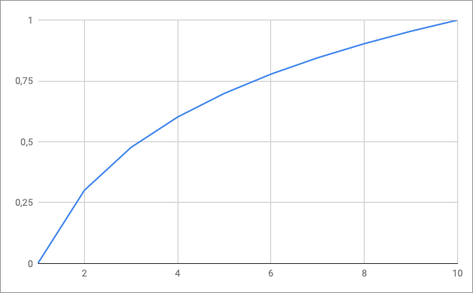

50%
A complexidade O(log n) é a quinta notação que estudaremos.
Agora que você já possui conhecimento na notação O(n log n), entender a O(log n) será fácil, uma vez que a diferença entre elas é que somente temos a referência ao log de "n".
Somente para revisar e reforçar o conceito estudado anteriormente, vamos definir novamente o que é um logaritmo.
Na matemática, o logaritmo de um número é o expoente a que outro valor fixo, a base, deve ser elevado para produzir este número. Por exemplo, o logaritmo de 1000 na base 10 é 3 porque 10 ao cubo é 1000 (1000 = 10 * 10 * 10 = 103).
Agora que já reforçamos o conceito de logaritmo, vamos olhar e comparar alguns casos para entender seu comportamento:
Conforme você pode reparar, os números incrementam em intervalos muito pequenos entre eles, além de se manterem bem abaixo do valor de "n", que seria o tamanho da entrada de dados.
Isso é ótimo, pois significa que um algoritmo O(log n) terá um processamento abaixo de quantidade de dados de entrada, o que resultará em uma excelente performance.
Na prática, esses algoritmos são otimizados para iterar parcialmente nos dados de entrada, como é o caso da busca binária que será apresentado na sequencia.
Se colocarmos a complexidade O(log n) em um gráfico, teremos a seguinte representação:

Repare que a curva formada é no sentido de "x", o que significa que seu desempenho vai se estabilizando e se mantendo abaixo a medida em que adicionamos mais dados de entrada.
Vamos agora ver como seria uma implementação do mesmo na prática.
Como demonstração usaremos um popular algoritmo de busca chamado busca binária, que através do conceito de dividir para conquistar, vai separando a lista na metade, e verificando para qual dos lados da lista devemos seguir a busca.
Com isso, a cada verificação vamos eleminando metade dos dados a serem verificados, encontrando o valor desejado em apenas algumas operações.
Este algoritmo necessita de uma lista de dados previamente ordenada para funcionar.
Não se preocupe em entender todos os detalhes desse algoritmo, pois ele será estudado em detalhes em uma lição futura desse curso.
private int buscaBinaria(int[] numeros, int inicio, int fim, int numero) {
int indice = -1;
while (inicio <= fim) {
int meio = (inicio + fim) / 2;
if (numeros[meio] < numero) {
inicio = meio + 1;
} else if (numeros[meio] > numero) {
fim = meio - 1;
} else if (numeros[meio] == numero) {
indice = meio;
break;
}
}
return indice;
}
A busca binária itera sob uma lista ordenada de dados através de um laço while, e para cada iteração ele elimina metade da lista, até encontrar o elemento desejado.
Caso o elemento não seja encontrado, ele retona "-1", assim como será retornado o índice do elemento na lista para quando ele estiver presente.
Somente para relelmbrar, esse algoritmo será estudo em detalhes em uma lição futura.
Para você testar na prática e verificar a performance de um algoritmo O(log n), vamos criar uma classe contendo um experimento que demonstrará a performance do algoritmo busca binária.
Para isso crie um arquivo chamado OrdemLogN.java com o seguinte código:
public class OrdemLogN {
private int buscaBinaria(int[] numeros, int inicio, int fim, int numero) {
int indice = -1;
while (inicio <= fim) {
int meio = (inicio + fim) / 2;
if (numeros[meio] < numero) {
inicio = meio + 1;
} else if (numeros[meio] > numero) {
fim = meio - 1;
} else if (numeros[meio] == numero) {
indice = meio;
break;
}
}
return indice;
}
private static void executarExperimento(OrdemLogN ordemLogN, int qtdNumeros, int numero) {
int[] numeros = new int[qtdNumeros];
for (int i=0; i < qtdNumeros; i++) {
numeros[i] = i + 1;
}
long inicio = System.currentTimeMillis();
System.out.println("Executando experimento para lista de " + qtdNumeros + " números.");
int indice = ordemLogN.buscaBinaria(numeros, 0, qtdNumeros-1, numero);
long fim = System.currentTimeMillis();
System.out.println("Encontrado valor " + numeros[indice] + " no índice " + indice);
System.out.println("Experimento executado em " + (fim - inicio) + "ms\n");
}
public static void main(String[] args) {
OrdemLogN ordemLogN = new OrdemLogN();
executarExperimento(ordemLogN, 1, 1);
executarExperimento(ordemLogN, 100, 100);
executarExperimento(ordemLogN, 1000, 1000);
executarExperimento(ordemLogN, 100000, 100000);
executarExperimento(ordemLogN, 1000000, 1000000);
executarExperimento(ordemLogN, 10000000, 10000000);
executarExperimento(ordemLogN, 100000000, 100000000);
executarExperimento(ordemLogN, 200000000, 200000000);
executarExperimento(ordemLogN, 300000000, 300000000);
executarExperimento(ordemLogN, 350000000, 350000000);
}
}
O código acima chama o mesmo método estudado anteriormente, porém com diferentes valores de entrada, e registra o tempo de execução para cada chamada.
Usando os conceitos aprendidos no primeiro módulo do curso, compile e execute a classe Java, você deverá ver no terminal algo similar a:
Executando experimento para lista de 1 números.
Encontrado valor 1 no índice 0
Experimento executado em 1ms
Executando experimento para lista de 100 números.
Encontrado valor 100 no índice 99
Experimento executado em 0ms
Executando experimento para lista de 1000 números.
Encontrado valor 1000 no índice 999
Experimento executado em 0ms
Executando experimento para lista de 100000 números.
Encontrado valor 100000 no índice 99999
Experimento executado em 0ms
Executando experimento para lista de 1000000 números.
Encontrado valor 1000000 no índice 999999
Experimento executado em 0ms
Executando experimento para lista de 10000000 números.
Encontrado valor 10000000 no índice 9999999
Experimento executado em 0ms
Executando experimento para lista de 100000000 números.
Encontrado valor 100000000 no índice 99999999
Experimento executado em 1ms
Executando experimento para lista de 200000000 números.
Encontrado valor 200000000 no índice 199999999
Experimento executado em 0ms
Executando experimento para lista de 300000000 números.
Encontrado valor 300000000 no índice 299999999
Experimento executado em 0ms
Executando experimento para lista de 350000000 números.
Encontrado valor 350000000 no índice 349999999
Experimento executado em 0ms
Repare que interessante os tempos de execução, onde mesmo para uma lista contendo 35 milhões de números, seu tempo de execução foi praticamente nulo!
Portanto concluímos que algoritmos do tipo O(log n) são muito bons em termos de performance.
Aproveite também para testar a execução com outros valores, até estar confortável com o entendimento de execução desse algoritmo.